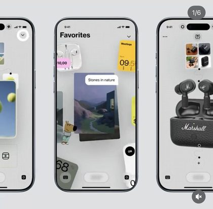
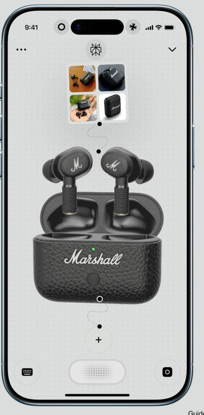
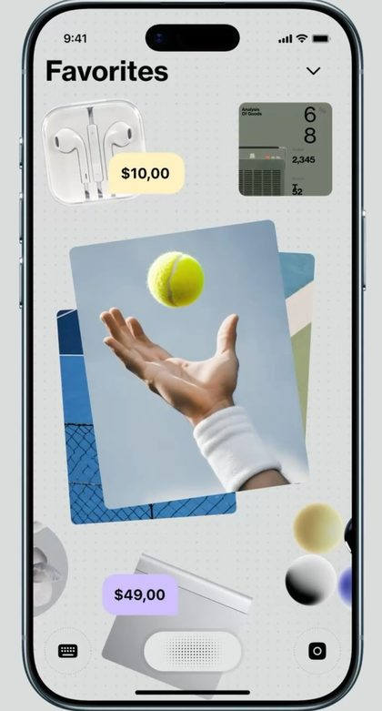
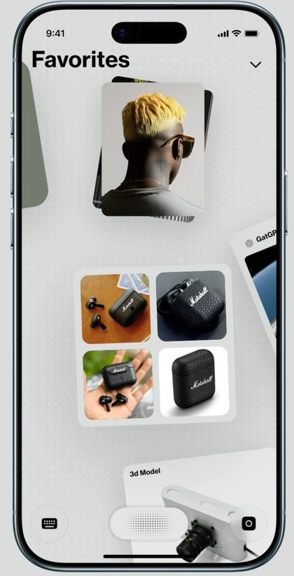

What do you need to work through?
This is yours alone until it needs a room, shared context, or a canvas.
Hermes sees this chat only.
This is yours alone until it needs a room, shared context, or a canvas.
Hermes sees this chat only.
Goal: make the room feel like a space — objects at depth, conversation as the hero.
Current truth: three-column SaaS layout, canvas framed by chrome.
Next action: depth system + dotted grid + floating conversation.
#b7eb52#1a1a19
Objects float at depth. Dotted grid grounds the space.



Keep the ChatGPT skeleton. Give the rooms the spatial soul.
Conversation floats; references sit behind.